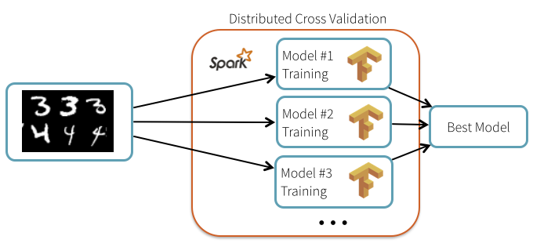

Distributed Deep Learning
Spark on AWS
Presented by Vincent Van Steenbergen - @nsteenv
whoami
Vincent Van Steenbergen
Data Engineer @ Abstract Minds
Playing with Scala, Akka & Spark +/- 3 years
Deeply interested in Artificial Intelligence and Data Analysis
Disclaimer
Deep Learning
convolutional neural networks
Applications
Image analysis

Image generation

Games
Training a model requires:
a lot of time
even more computing power
Ex: AlphaGo - 1202 CPU and 176 GPU
So how can I do that...
from my laptop?
for a decent cost?
within a short timespan?
possible on a laptop but very slow
solution: distribute training over a cluster
Apache Spark

Scala/Python framework for big data analysis
Like Hadoop but faster
Advantages
Able to handle potentially Tb of data in streaming
Parallelise operations on a big cluster of machines
Improves accuracy of results
Amazon Web Services (EC2)
GPU instances (g2.2xlarge, g2.8xlarge)
Spot instances (on demand, generally 2-3 times cheaper than regular instances)
g2.8xlarge configuration
Four NVIDIA GRID GPUs, each with 1,536 CUDA cores and 4 GB of video memory
32 vCPUs
60 GiB of memory
240 GB (2 x 120) of SSD storage
Average price: $1.00 per hour
Not bad...
Deep Learning Frameworks
TensorFlow (Google)
Caffe (Berkeley)
MNIST Dataset

Handwriten digits dataset
Cross validation
Computation time
Results
7x speedup compared to training the models one at a time on one machine
best result with hyperparameter tuning has a 99.47% accuracy on the test set
which is a 34% reduction of the test error.
Image classification
Results
('coral reef', 0.88503921),
('scuba diver', 0.025853464),
('brain coral', 0.0090828091),
('snorkel', 0.0036010914),
('promontory, headland, head, foreland', 0.0022605944)])
Thank you!
Any questions?
My email: v.vansteenbergen@gmail.com